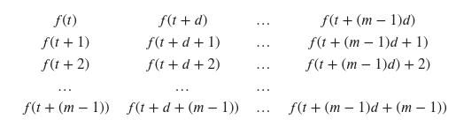

Nonlinear
Misc
- Gaps in the time variable can be a problem if you are trying to interpolate between those gaps. (see bkmk,
method = "reml" + s(x, m = 1)) - Resources
- Nonlinear Time Series Analysis, Kantz, Schreiber (See R >> Documents >> Time Series)
- Packages
- Time Series Task View “Nonlinear Time Series Analysis”
- {nonlinearTseries} (Vignette) - Facilitates the computation of the most-used nonlinear statistics/algorithms including generalized correlation dimension, information dimension, largest Lyapunov exponent, sample entropy and Recurrence Quantification Analysis (RQA), among others. Basic routines for surrogate data testing are also included.
- {tsDyn}
- AR: standard linear AR (auto-regressive)
- SETAR: self-exciting threshold AR
- LSTAR: Logistic smooth transition AR
- NNET: neural-network
- AAR: additive AR
- {probcast} - Has function wrappers around gams, gamlss, and boosted gamlss models from {mgcv}, {mboost}, {gamlss}, etc. for use in forecasting. Supports high-dimensional dependency modeling based on Gaussian Copulas (paper, use case)
- {{EristroPy}} (Paper) - Bayesian optimization of Sample Entropy’s hyperparameters
- Copulas
- Also see Association, Copulas
- TUTORIAL julia, copulas + ARMA model, example w/exonential distribution - ARMA Forecasting for Non-Gaussian Time-Series Data Using Copulas | by Sarem Seitz | Jun, 2022 | Towards Data Science
- Issues
- When the size of the observed time-series becomes very large.
- In that case, the unconditional covariance matrix will scale poorly and the model fitting step will likely become impossible.
- Potential Solution: Implicit Copulas which define a Copula density through a chain of conditional densities
- MLE for distributions where the derivatives of their cdfs becomes complex
- Exponental distribution’s is simple (used in article)
- See article for potential solutions
- When the size of the observed time-series becomes very large.
Piecewise Linear
Simple approach that manually adds a knot at a specified location
Resources
- Piecewise linear trends by Hyndman
Example: {fable} (source)
boston_men <- boston_marathon |> filter(Year >= 1924) |> filter(Event == "Men's open division") |> mutate(Minutes = as.numeric(Time)/60) fit_trends <- boston_men |> model( linear = TSLM(Minutes ~ trend()), exponential = TSLM(log(Minutes) ~ trend()), piecewise = TSLM(Minutes ~ trend(knots = c(1950, 1980))) ) fc_trends <- fit_trends |> forecast(h = 10)Example: (source)
1ts1 <- ts1 |> dplyr::filter(index > 1986) |> dplyr::mutate(trend = seq_len(dplyr::n())) head(ts1) # A tsibble: 6 x 4 [1Y] #> index y series_id trend #> <int> <int> <chr> <int> #> 1 1987 7904858 SCA 1 #> 2 1988 8113034 SCA 2 #> 3 1989 8313776 SCA 3 #> 4 1990 8497848 SCA 4 #> 5 1991 8634774 SCA 5 #> 6 1992 8680613 SCA 6 md1 <- lm(y ~ trend, data = ts1) fit1 <- predict(object = md1, newdata = ts1, interval = "confidence", level = 0.95) ts1$fit1 <- fit1[, 1] plot_ly() |> add_lines(x = ts1$index, y = ts1$y, type = "scatter", mode = "lines", name = "Actual") |> add_lines(x = ts1$index, y = ts1$fit1, mode = "lines", line = list(color = "black", dash = "dash"), name = "Fitted")- 1
- Removes a 0 value for 1986 and adds a trend variable which is just a row index.
1s <- ts1$trend[which(ts1$index == 2008)] 2ts1$trend2 <- pmax(0, ts1$trend - s) ts1[(s-5):nrow(ts1), ] #> # A tsibble: 21 x 5 [1Y] #> index y series_id trend trend2 #> <int> <int> <chr> <int> <dbl> #> 1 2003 9803311 SCA 17 0 #> 2 2004 9957412 SCA 18 0 #> 3 2005 10124433 SCA 19 0 #> 4 2006 10329224 SCA 20 0 #> 5 2007 10439220 SCA 21 0 #> 6 2008 10515162 SCA 22 0 #> 7 2009 10510950 SCA 23 1 #> 8 2010 10542584 SCA 24 2 #> 9 2011 10625190 SCA 25 3 #> 10 2012 10681916 SCA 26 4 #> 11 2013 10754908 SCA 27 5 #> 12 2014 10781720 SCA 28 6 #> 13 2015 10969597 SCA 29 7 #> 14 2016 10916368 SCA 30 8 #> 15 2017 11004853 SCA 31 9 #> 16 2018 11025789 SCA 32 10 #> 17 2019 11112094 SCA 33 11 #> 18 2020 11186350 SCA 34 12 #> 19 2021 11232552 SCA 35 13 #> 20 2022 11280329 SCA 36 14 #> 21 2023 11355756 SCA 37 15 md2 <- lm(y ~ trend + trend2, data = ts1) fit2 <- predict(object = md2, newdata = ts1, interval = "confidence", level = 0.95) ts1$fit2 <- fit2[, 1] plot_ly() |> add_lines(x = ts1$index, y = ts1$y, type = "scatter", mode = "lines", name = "Actual") |> add_lines(x = ts1$index, y = ts1$fit2, mode = "lines", line = list(color = "black", dash = "dash"), name = "Fitted")- 1
- This is a yearly time series, so the index values are years. 2008 is where we want to place the knot to account for the change in trend.
- 2
-
pmaxchooses greatest value between zero and the expression. This results in an index starting with the value after the knot location.
{kind=link}
{kind=link}
STL-ELM
- Packages
- {stlELM} - Hybrid Forecasting Model Based on STL Decomposition and ELM
- Papers
- Seasonal Trend Decomposition using LOESS (STL) - Extreme Learning Machine (ELM)
- Hybrid univariate forecasting model for complex series (non-stationary, non-linear)
- The univariate series is decomposed into subseries using STL and each subseries is forecast using ELM, then those subseries forecasts are ensembled for the final forecast
- Each subseries is simpler and stationary
VMD-TDNN
- Variational Mode Decomposition (VMD) Based Time Delay Neural Network Model (TDNN)
- Hybrid univariate forecasting model for complex series (non-stationary, non-linear)
- The univariate series is decomposed into “modes” using VMD and each mode is forecast using TDNN, then those mode forecasts are recombined for the final forecast
- The modes are generated by Intrinsic Mode Functions (IMFs)
- Orthogonal to each other, stationary, and non-linear
- Think the recombination method is simply to sum the forecasts
- The modes are generated by Intrinsic Mode Functions (IMFs)
- Misc
- The number of modes you choose is very important
- Methods for choosing the number of modes
- Central Frequency Method (CFM)
- Signal Difference Average (SDA)
Taken’s Embedding
A Dynamic Systems Model that transforms the time series into space where the dimensions are determined by multiples of lags of the time series. This transformation removes the autocorrelation between the data points and allows it to be forecasted.
- Kind of like a SVM
Misc
- {nonlinearTseries}
Parameters
d or τ - Called the time delay, this will tell us how many time lags each axis of the phase space will represent
# tau (time delay) estimation based on the average mutual information function tau.ami = timeLag(ts, technique = "ami", lag.max = 100, do.plot = T)m - Called the embedding dimension, this parameter will tell us the dimension of the phase space
# m (embedding dimension) uses the tau estimation emb.dim = estimateEmbeddingDim(ts, time.lag = tau.ami, max.embedding.dim = 15)- Estimated using Cao’s algorithm
Phase Space Embedding Matrix
- Where f(t) is the univariate time series
Build the Taken’s model
tak = buildTakens(ts,embedding.dim = emb.dim, time.lag = tau.ami)